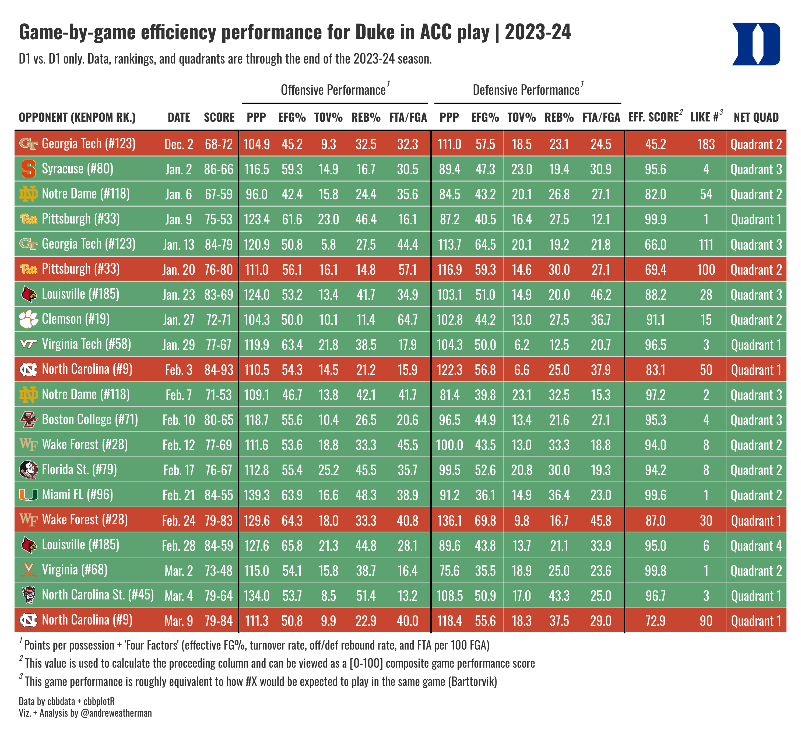

Team Game Performance
gt
college basketball
cbbdata
tutorial
Four Factor team performance tables
The What
We will be creating a neat game performance table, highlighting team-wide four factors on a game-by-game basis. For brevity, I’m only going to plot conference games, but you can plot whichever subset of games that you’d like.
What we will be creating
The How
For this visualization, we will need:
This visualization uses data from cbbdata}. If you have not yet installed the package and created an account, follow the steps outlined here.
The process needed to grab our data involves using a few joins, so to simplify the process, we will walk through each “segment” individually. The full source code, included at the bottom of this post, will be more concise.
The Data
Game Stats and NET
The most important piece of our table, evidently, is game data. We are plotting “Four Factors,” which is a group of statistics defined by Dean Oliver as integral to winning basketball games. It’s a decades-old concept that has held true against the test of time. Using cbbdata, we can quickly get these data on a per-game level (caveat: D-1 vs. D-1 games only).
We also want to include the score of the game, and we can use the `glue package to build the score by concatenate two columns. We are also going to adjust our game date to be more readable.
Finally, we want to include NET rankings and quadrant boundaries. As hinted earlier, the new update to cbbdata includes a function to do this for us. If you are not familiar with the NET or quadrants, you can learn more here.
Since we are plotting Duke’s performance, we only need to request the Blue Devils’ game results. If you wish to plot another team (or year), remember to switch out all instances of Duke for your own team (or year). The process is the same.
factors_net <- cbd_torvik_game_stats(year = 2024, team = 'Duke', type = 'conf') %>%
arrange(date) %>%
cbd_add_net_quad() %>%
mutate(score = glue('{pts_scored}-{pts_allowed}'),
date = format(date, '%b. %e')) %>%
select(date, result, opp, score, off_ppp, off_efg,
off_to, off_or, off_ftr, def_ppp, def_efg, def_to,
def_or, def_ftr, game_score, net, quad)| date | result | opp | score | off_ppp | off_efg | off_to | off_or | off_ftr | def_ppp | def_efg | def_to | def_or | def_ftr | game_score | net | quad |
|---|---|---|---|---|---|---|---|---|---|---|---|---|---|---|---|---|
| Dec. 2 | L | Georgia Tech | 68-72 | 104.9 | 45.2 | 9.3 | 32.5 | 32.3 | 111.0 | 57.5 | 18.5 | 23.1 | 24.5 | 45.2 | 127 | Quadrant 2 |
| Jan. 2 | W | Syracuse | 86-66 | 116.5 | 59.3 | 14.9 | 16.7 | 30.5 | 89.4 | 47.3 | 23.0 | 19.4 | 30.9 | 95.6 | 84 | Quadrant 3 |
| Jan. 6 | W | Notre Dame | 67-59 | 96.0 | 42.4 | 15.8 | 24.4 | 35.6 | 84.5 | 43.2 | 20.1 | 26.8 | 27.1 | 82.0 | 124 | Quadrant 2 |
| Jan. 9 | W | Pittsburgh | 75-53 | 123.4 | 61.6 | 23.0 | 46.4 | 16.1 | 87.2 | 40.5 | 16.4 | 27.5 | 12.1 | 99.9 | 40 | Quadrant 1 |
| Jan. 13 | W | Georgia Tech | 84-79 | 120.9 | 50.8 | 5.8 | 27.5 | 44.4 | 113.7 | 64.5 | 20.1 | 19.2 | 21.8 | 66.0 | 127 | Quadrant 3 |
| Jan. 20 | L | Pittsburgh | 76-80 | 111.0 | 56.1 | 16.1 | 14.8 | 57.1 | 116.9 | 59.3 | 14.6 | 30.0 | 27.1 | 69.4 | 40 | Quadrant 2 |
Relative Performance
Barttorvik includes a neat stat called Game Score. Game score can be thought of as a composite look at how well your team played in a given game. In a nutshell, game score is a per-game Barthag rating, which — while typically viewed across the aggregate where it down-weights mismatches — is an estimation of a team’s winning chances vs. the average team on a neutral floor. Game score is judged on a [0, 100] scale and is positive (scores closer to 100 are better).
With this information, we can create a data column that says, “In this game, my team played similar to how the T-Rank #X team would be expected to play against the same opponent.” Another appropriate interpretation would be a quick view of team consistency; this can be judged by looking at both the game_score column and our new one. Obviously, game score is pretty volatile at a per-game level, but it’s still nice to look at.
To do this, we need to create a function that pulls the closest current national ranking that corresponds to that game score.
find_closest_rank <- function(scores) {
map_int(scores, function(score) {
differences <- abs(ratings$barthag - score / 100)
closest_index <- which.min(differences)
ratings$barthag_rk[closest_index]
})
}
ratings <- cbd_torvik_ratings(year = 2024) # get current rankingsNow, we can apply it to our data
KenPom Rankings
Finally, we want to include KenPom rankings in our table.
current_kp <- cbd_kenpom_ratings(year = 2024) %>%
select(opp = team, rank = rk)
factors_net <- left_join(factors_net, current_kp, by = 'opp')Plotting
Our table will use a few functions from {cbbplotR} to aid in creating our table. Here is a quick overview of each.
Adding opponent logos
Our table includes logos of each Duke opponent, which is a nice way of quickly identifying any game of interest. This process involves mashing together some HTML, but cbbplotR includes a function called gt_cbb_teams that will do this for us!
Our table will have some dark fill colors for wins and losses, so let’s use dark mode logos for our opponents. By default, gt_cbb_teams pulls normal logos, but you can set logo_color = “dark” to get dark ones.
We also want to include the KenPom rank of each opponent, but we need to add it after we have called gt_cbb_teams. Then, let’s create a new frame called table_data.
table_data <- factors_net %>%
# we want to add HTML in the opp col. and rewrite it -> so: opp, opp
gt_cbb_teams(opp, opp, logo_color = 'dark') %>%
mutate(opp = glue('{opp} (#{rank})'))| date | result | opp | score | off_ppp | off_efg | off_to | off_or | off_ftr | def_ppp | def_efg | def_to | def_or | def_ftr | game_score | net | quad | closest_rank | rank |
|---|---|---|---|---|---|---|---|---|---|---|---|---|---|---|---|---|---|---|
| Dec. 2 | L |
 Georgia Tech (#123) Georgia Tech (#123) |
68-72 | 104.9 | 45.2 | 9.3 | 32.5 | 32.3 | 111.0 | 57.5 | 18.5 | 23.1 | 24.5 | 45.2 | 127 | Quadrant 2 | 183 | 123 |
| Jan. 2 | W |
 Syracuse (#80) Syracuse (#80) |
86-66 | 116.5 | 59.3 | 14.9 | 16.7 | 30.5 | 89.4 | 47.3 | 23.0 | 19.4 | 30.9 | 95.6 | 84 | Quadrant 3 | 4 | 80 |
| Jan. 6 | W |
 Notre Dame (#118) Notre Dame (#118) |
67-59 | 96.0 | 42.4 | 15.8 | 24.4 | 35.6 | 84.5 | 43.2 | 20.1 | 26.8 | 27.1 | 82.0 | 124 | Quadrant 2 | 54 | 118 |
| Jan. 9 | W |
 Pittsburgh (#33) Pittsburgh (#33) |
75-53 | 123.4 | 61.6 | 23.0 | 46.4 | 16.1 | 87.2 | 40.5 | 16.4 | 27.5 | 12.1 | 99.9 | 40 | Quadrant 1 | 1 | 33 |
| Jan. 13 | W |
Georgia Tech (#123) |
84-79 | 120.9 | 50.8 | 5.8 | 27.5 | 44.4 | 113.7 | 64.5 | 20.1 | 19.2 | 21.8 | 66.0 | 127 | Quadrant 3 | 111 | 123 |
| Jan. 20 | L |
Pittsburgh (#33) |
76-80 | 111.0 | 56.1 | 16.1 | 14.8 | 57.1 | 116.9 | 59.3 | 14.6 | 30.0 | 27.1 | 69.4 | 40 | Quadrant 2 | 100 | 33 |
Creating the title
If you notice, our table header is pretty cool. It includes Duke’s logo, which is a nice way of quickly identifying the subject of our data. Making a header like this includes tinkering with some HTML — but luckily, cbbplotR ships with a function that will build the header for us! More specifically, it will allow us to include a team logo, conference logo, player headshot, or a custom image by passing through an external link. As you’ll see later in the code, we will eventually need to wrap this object in HTML.
To include a logo for Duke, we set the value to Duke and the type to “team”. We can set a table title + subtitle and adjust the fonts, weights, and line-heights of both as well (which we won’t do).
gt_title <- gt_cbb_logo_title(
title = 'Game-by-game efficiency performance for Duke in ACC play | 2023-24',
subtitle = 'D1 vs. D1 only. Data, rankings, and quadrants are through the end of the 2023-24 season.',
value = 'Duke',
type = 'team'
)Coloring W/L
cbbplotR ships with another utility function, gt_color_results, that will take a column of game results — either W/L characters or 1/0 binaries — and fill each row relative to the game result. It’s a tidy way of replicating two tab_style calls in a single line. You can also adjust the win/loss_color (fill) and the wins/loss_text_color. By default, the font color is white, which we will keep.
Setting the table font
The final cbbplotR utility function is gt_set_font, which is a quick and dirty way of changing the font in all customizable parts of your table. You’ll notice that we will still use tab_style to adjust the weights of our column labels, however, and it should be noted that gt_set_font does not yet offer customization aside from changing the font family. You can think of it as a nice way to test different fonts in your table.
Building the table
Now that we have briefly explored each cbbplotR function, created our table header, and finalized our data, let’s throw it over to gt!
Okay, there’s a lot going on here. If you’re relatively new to gt, I really recommend that you step through each line. It might seem overwhelming, but many of the functions are intuitively named, and running the code line-by-line should help you understand what’s happening.
Optional CSS
I’m not going to walk through every function, but I did want to briefly mention the opt_css line at the end. opt_css is a way of adding CSS to your tables, which really extends table possibilities. In fact, gt is just converting everything to HTML — which is why we can get some neat customization with our table header.
In our table, specifically, we use this CSS to decrease the spacing between each footnote and our caption lines. To make this work, we need to set a table ID, which we do in the second line with gt(id = 'duke') and then reference that ID as a selector.
table_data %>%
gt(id = 'duke') %>%
gt_theme_538() %>%
fmt_markdown(opp) %>%
cols_move(date, opp) %>%
cols_move_to_end(quad) %>%
cols_hide(c(result, rank, net)) %>%
cols_align(columns = everything(), 'center') %>%
cols_align(columns = opp, 'left') %>%
cols_label(opp = 'opponent (KenPom Rk.)', off_ppp = 'PPP',
def_ppp = 'PPP',off_efg = 'eFG%', off_to = 'TOV%',
off_or = 'Reb%',off_ftr = 'FTA/FGA', def_efg = 'eFG%',
def_to = 'TOV%', def_or = 'Reb%', def_ftr = 'FTA/FGA',
game_score = 'Eff. Score', quad = 'NET Quad',
closest_rank = 'Like #') %>%
gt_color_results() %>%
tab_style(locations = cells_column_labels(),
style = cell_text(font = 'Oswald', weight = 'bold')) %>%
tab_style(locations = cells_title(), style =
cell_text(font = 'Oswald')) %>%
tab_options(table.font.names = 'Oswald', data_row.padding = 2) %>%
gt_add_divider(score, include_labels = FALSE, color = 'black') %>%
gt_add_divider(off_ftr, include_labels = FALSE, color = 'black') %>%
gt_add_divider(def_ftr, include_labels = FALSE, color = 'black') %>%
tab_spanner(off_ppp:off_ftr, label = 'Offensive Performance',
id = 'offense') %>%
tab_spanner(def_ppp:def_ftr, label = 'Defensive Performance',
id = 'defense') %>%
tab_footnote(cells_column_spanners(spanner = c('offense', 'defense')),
footnote = "Points per possession + 'Four Factors'
(effective FG%, turnover rate, off/def rebound rate,
and FTA per 100 FGA)") %>%
tab_footnote(cells_column_labels(columns = game_score),
footnote = 'This value is used to calculate the
proceeding column and can be viewed as a [0-100]
composite game performance score') %>%
tab_footnote(cells_column_labels(columns = closest_rank),
footnote = 'This game performance is roughly
equivalent to how #X would be expected to play in the
same game (Barttorvik)') %>%
tab_header(title = html(gt_title)) %>%
tab_source_note(md('Data by cbbdata + cbbplotR
<br>Viz. + Analysis by @andreweatherman')) %>%
opt_css(
'
#duke .gt_sourcenote{
line-height: 1.2;
padding-top: 9px !important;
}
#duke .gt_footnote {
padding-top: 7px !important;
padding-bottom: 7px !important;
line-height: 0.2;
}
'
)